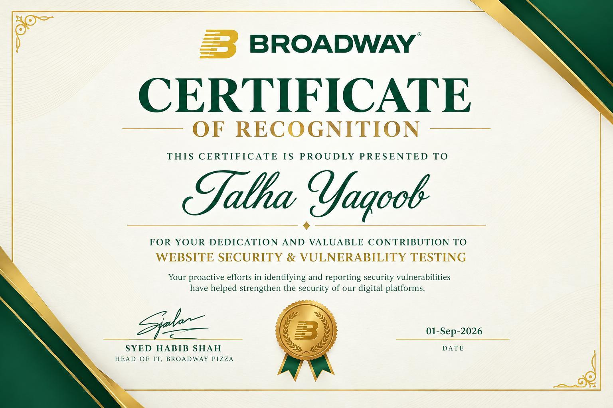

Follow the signal.defense. I’m Talha, a cybersecurity undergraduate focused on SOC operations, malware analysis, and tools that help defenders decide what deserves attention.
01—04
01 / OBSERVE 02 / INVESTIGATE 03 / PRIORITIZE 04 / EXPLAIN Evidence → context → action ↗
Python Sigma rules Detection analysis FastAPI Credential exposure Threat investigation
01 / SELECTED WORK
Built around real Practical tools. Visible reasoning.
01 DETECTION ENGINEERING PYTHON
mechanic. Which detection rules deserve a closer look?
A Sigma rule review tool that examines detection logic and git history to flag fragile or poorly maintained rules. It keeps fragility and staleness visible as separate signals.
Logic-tree analysis for Sigma rules Maintenance review that filters bulk commit noise CLI and local interface with explainable findings RULE REVIEW / CONCEPTUAL VIEW •••
selection : : 'powershell.exe' |contains: 'Invoke-WebRequest' condition : selection
FRAGILITY Rule logic
STALENESS Git history
Two independent signals. One informed review.
02 SECURITY AUTOMATION PYTHON / FASTAPI
LeakWatch. A secret was exposed. What needs attention first?
A self-hosted secret-exposure monitor that brings detection, risk scoring, and ownership attribution into one triage workflow.
Pattern matching and entropy-based detection Ownership attribution through CODEOWNERS and history API-key authentication and retention controls THE TRIAGE PIPELINE ↘
01 Collect Public sources
↓ 02 Detect Patterns + entropy
↓ 03 Prioritize Risk + ownership
From a pattern match to a finding worth investigating.
02 / FIELD NOTES
Thinking out loud. Lab investigations and research
All notes Detection Investigations Research
03 / THE PERSON BEHIND THE TOOLS
Curious about threats. I’m Talha Yaqoob, a cybersecurity undergraduate at Air University, based in Islamabad, Pakistan. I bring SOC internship experience together with hands-on investigation and Python development.
My practical work covers Wazuh deployments, Windows Event ID and Sysmon investigations, alert triage, and malware analysis with IDA Pro and Ghidra. I document what I find and build tools around the questions that come up along the way.
View my LinkedIn profile ↗ WORKING AT THE INTERSECTION OF 01 Investigation Understand the activity and follow the evidence.
02 Detection Examine the rule logic and its assumptions.
03 Automation Make repeatable analysis easier to use.
EXPERIENCE JUL — AUG 2026 National Aerospace Science & Intern · Rawalpindi, Pakistan · On-site
BIND9 DNS deployment, Active Directory attack-path and hardening research, and Python secrets-scanner development. 12 FEB — 12 APR 2026 ITSOLERA PVT LTD SOC Analyst Intern · Part-time · Remote
Wazuh alert monitoring, Windows/Sysmon triage, malware sample analysis, IOC documentation, and escalation. 15 AUG — 18 SEP 2025 Cyber Academy SOC Analyst Intern
Wazuh on Ubuntu, Windows endpoint and server integration, firewall logs, and four assessed SOC tasks. EDUCATION & LAB EXPERIENCE SEP 2024 — PRESENT Air University BS Cybersecurity · Expected 2028
MAR 2025 — PRESENT TryHackMe Independent blue-team lab practice
Malware analysis, phishing detection, threat investigation, and threat hunting scenarios. MAR — MAY 2025 SOC L1 learning path TryHackMe · Lab experience
Windows and Linux log analysis, malicious document and email investigation, and attack-chain reconstruction. ADDITIONAL PROFILE SKILLS Elastic Stack (ELK) Splunk Enterprise Security IT Infrastructure
05 / HANDS-ON LAB WORK
From the alert Practical work documented
01 / SOC MONITORING Wazuh + Windows Server Manager-agent monitoring, Windows event-log integration, File Integrity Monitoring rules, and documented alert workflows.
Wazuh · Windows Server · FIM
02 / MALWARE ANALYSIS Reverse engineering, hands on Seven or more Practical Malware Analysis labs exploring unpacking, Windows-service persistence, COM abuse, and C2 behavior.
IDA Pro · Ghidra · x86 · PE analysis
03 / NETWORK ANALYSIS Understanding traffic A controlled ARP spoofing and MITM lab, examining intercepted network traffic and behavior with Wireshark.
Wireshark · ARP · Controlled lab
Continuing the learning. Training listed in my resume includes TryHackMe SOC Level 1, Downtime, Malware Analysis Room, and Security Blue Team’s Introduction to Threat Hunting.
SOC LEVEL 2 IN PROGRESS 06 / RECOGNITION
Finding an issue. Broadway Pizza recognized my contributions to website security and vulnerability testing, including identifying and reporting vulnerabilities.
Certificate of Recognition · 01 September 2026
View the certificate ↗ 